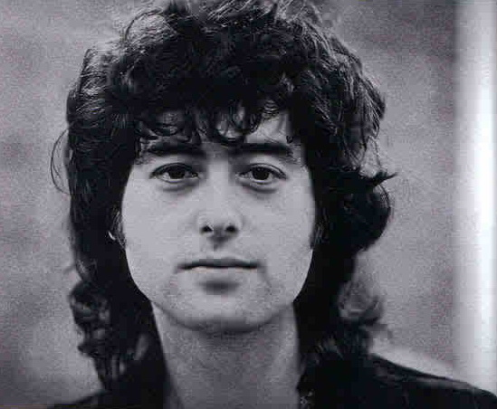
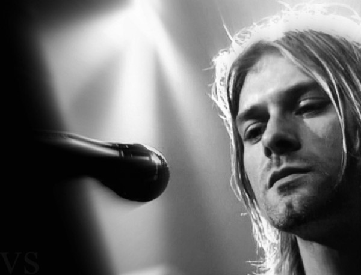
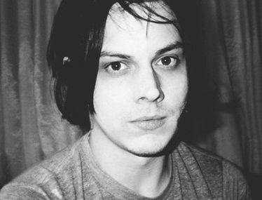
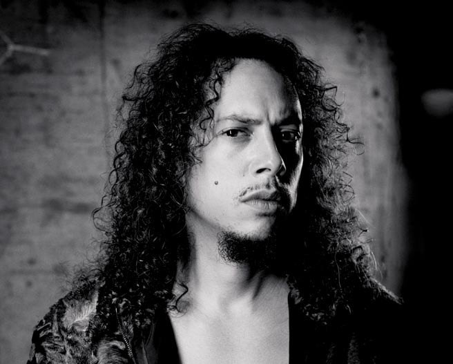
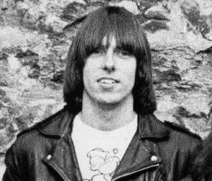
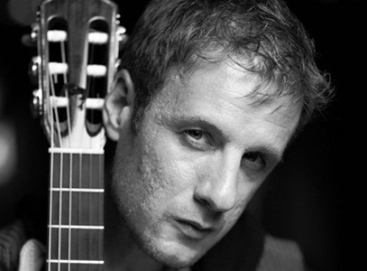
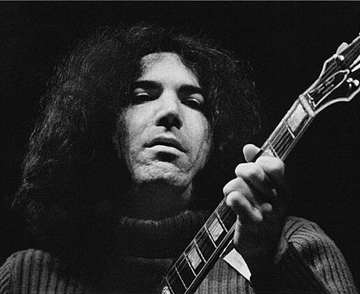
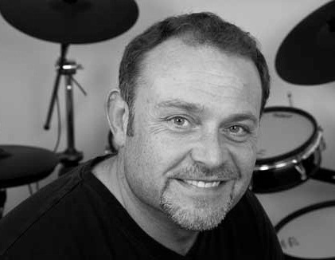
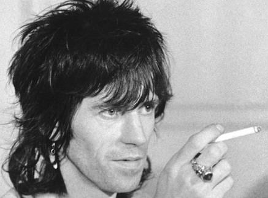

Джимми Пейдж
британский рок-музыкант, композитор и гитарист-виртуоз, стоявший у истоков Led Zeppelin и до самого конца оставался музыкальным «мозгом» группы.
Курт Кобейн
американский певец, автор песен, музыкант и художник, наиболее известный как вокалист и гитарист американской рок-группы Nirvana, исполнявшей гранж.
Джек Уайт
американский рок-музыкант, певец, гитарист, автор песен, продюсер, мультиинструменталист, актёр, наибольшую известность получил как лидер группы The White Stripes.
Кирк Хэммет
американский гитарист, автор песен. Наиболее известен как участник группы Metallica. Занимал 11-е место в списке величайших гитаристов всех времён.
Джонни Рамон
гитарист и один из основателей американской панк-рок группы Ramones. Вместе с вокалистом Джоуи Рамоном он был в группе с момента её создания и до распада.
Валерий Дидюля
белорусский композитор, гитарист-виртуоз, лидер группы «Дидюля». Исполняет фолк-музыку и музыку в жанре фьюжн с влиянием стиля нью-эйдж.
Джерри Гарсия
американский музыкант, гитарист, вокалист группы «Grateful Dead», основоположник психоделического рока на западном побережье США.
Ричард Джон Томпсон
британский музыкант. В 2003 году журнал Rolling Stone поместил его на 19 место в списке «100 величайших гитаристов всех времён».
Кит Ричардс
британский гитарист и автор песен, вместе с Миком Джаггером составляющий неизменный костяк рок-группы The Rolling Stones.